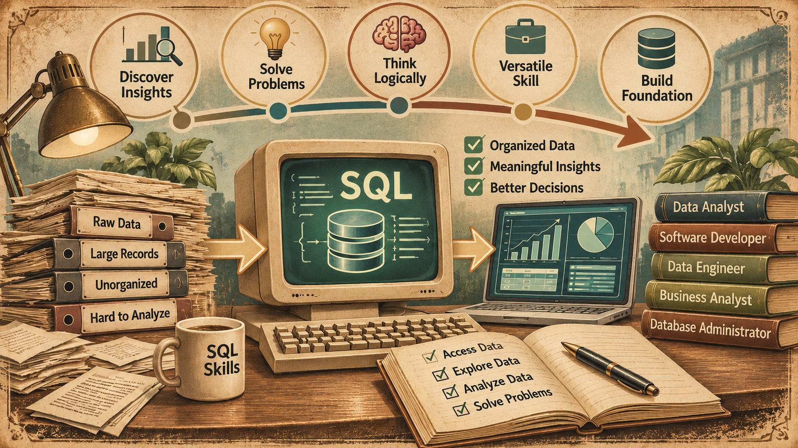

1. Why Is Learning SQL Important?
We live in a world driven by data.
Every day, businesses generate information through customer interactions, financial transactions, online services and everyday operations.
However, collecting information alone is not enough.
The real value of data comes from understanding it and using it to make better decisions.
This is where SQL becomes an important skill.
SQL allows professionals to access, explore, organize and analyze information stored in relational databases.
Whether you are beginning your technology journey or developing analytical skills, SQL provides a strong foundation for working with structured information.
2. Five Reasons to Learn SQL
Discover Meaningful Insights
SQL helps identify patterns, summarize information and discover useful insights from large datasets.
Solve Problems with Confidence
Instead of manually examining information, SQL helps you ask precise questions and investigate the answers.
Develop Analytical Thinking
Learning SQL strengthens logical reasoning, problem-solving and the ability to understand organized information.
Build a Versatile Technical Skill
SQL knowledge is useful in analytics, software development, business intelligence and data engineering.
Build a Foundation for Advanced Technologies
SQL helps you understand relational databases, data warehouses, cloud data platforms and modern analytics systems.
3. How SQL Changes the Way You Work
Imagine having access to a large collection of organized information.
Without SQL knowledge, you may need help from someone else to retrieve the information you need.
With SQL knowledge and appropriate database access, you can learn to explore records, investigate questions and summarize results independently.
Without SQL Knowledge
- May depend on others for database queries.
- May struggle to investigate large datasets.
- Has limited ability to explore relational data.
With SQL Knowledge
- Can write queries to retrieve information.
- Can explore and summarize data.
- Can investigate questions more independently.
SQL helps you move from simply viewing data to actively exploring and understanding it.
4. SQL Is More Than Memorizing Commands
SQL is not only about remembering statements and syntax.
It is about understanding information, asking the right questions and finding meaningful answers.
As you develop your SQL skills, you will learn to:
- Understand how structured data is organized.
- Retrieve relevant information.
- Combine and compare related information.
- Recognize patterns and trends.
- Explain your findings clearly.
- Apply logical thinking to practical problems.
These skills are valuable across many technical and analytical fields.
5. Key Takeaway
Learning SQL is about more than writing queries.
It is about developing the ability to understand data, solve problems and make informed decisions.
SQL provides a foundation for practical data skills that can grow alongside your career.